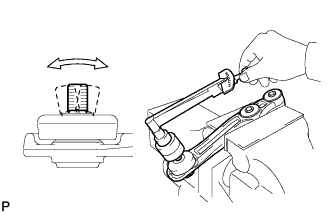

REAR STABILIZER BAR (w/ KDSS) > INSPECTION |
| 1. INSPECT REAR STABILIZER LINK ASSEMBLY |
 |
Temporarily install the nut, and flip the ball joint stud back and forth 5 times as shown in the illustration.
Use a torque wrench to turn the nut continuously at a rate of 2 to 3 seconds per turn. Take the torque reading on the fifth turn.
Check the dust boot for cracks or grease leakage.